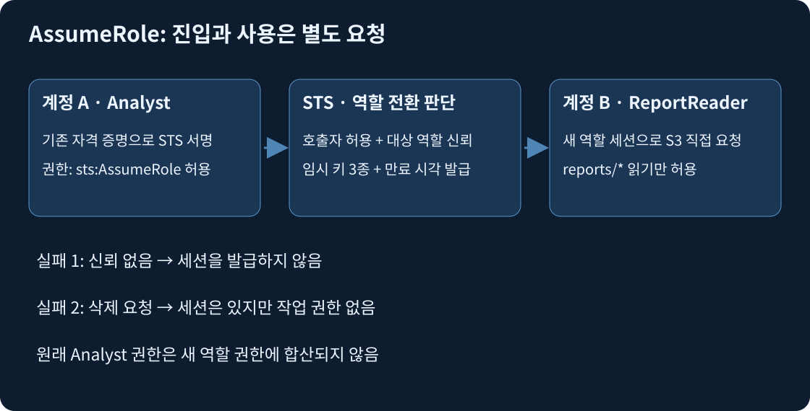
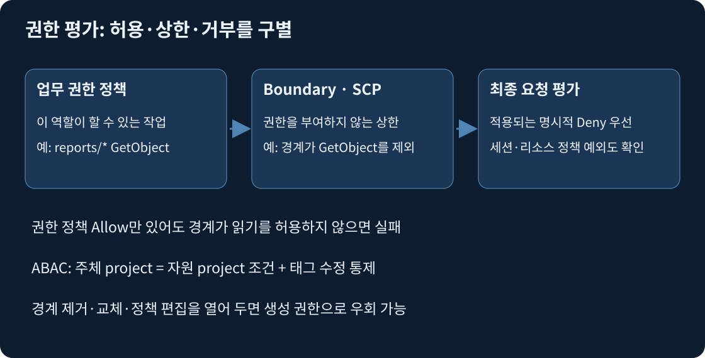

물리 호스트는 CPU·RAM·네트워크 장치를 가진 실제 서버다. 가상화 계층은 이를 격리된 가상 머신으로 나눈다. 일반적인 EC2 인스턴스는 그 가상 머신이며 게스트 OS는 인스턴스 안의 Linux·Windows다. bare metal 유형은 가상 머신 대신 호스트 자원을 직접 제공하는 예외다. AWS는 데이터센터·호스트·가상화 계층을 관리하고 고객은 EC2 게스트 OS의 업데이트, 계정, 앱, 보안 그룹을 관리한다. Nitro는 가상화·네트워크·스토리지 기능 일부를 전용 하드웨어로 분리하지만 고객 OS 패치 책임을 없애지 않는다.
한 호스트의 하드웨어 장애와 AZ의 전력·연결 장애는 범위가 다르다. 서로 다른 호스트에 두 대를 놓아도 같은 AZ이면 AZ 장애를 공유한다. 다중 AZ 앱은 요청을 살아 있는 인스턴스로 보내는 로드 밸런서와 데이터 복제도 필요하다. 리전은 그보다 큰 지리적 경계이며, 리전 간 복제는 서비스별 명시적 설정이다. IAM은 글로벌 서비스이지만 EC2·EBS 같은 리소스의 배치는 리전·AZ 범위를 가진다.
IAM 역할 설정은 삭제하기 전까지 계정에 남는다. 일시적인 것은 역할 자체가 아니라 역할을 맡아 만든 세션과 그 임시 자격 증명이다. 세션은 한 번의 역할 사용 기간이며, 같은 역할로 여러 세션을 만들 수 있다. 호출자(caller)는 API 요청을 보내는 주체이고 Principal은 정책에서 신원을 나타내는 항목이다. 권한(permission)은 특정 대상에 특정 행동을 할 수 있는 허용이며 역할의 별명이나 로그인 암호가 아니다.
API는 프로그램이 서비스에 보내는 정해진 형식의 요청이다. STS(Security Token Service)의 AssumeRole은 “이 역할을 맡는 세션을 만들어 달라”는 API다. 로그인 화면의 버튼이나 S3 파일을 전달하는 중계 서버가 아니다. 호출자는 기존 자격 증명으로 STS 요청에 서명한다. STS는 역할 전환을 허용할지 판단한 뒤 새 임시 자격 증명을 돌려준다. 이후 앱은 그 값으로 S3 등 다른 서비스에 직접 요청한다.

아래 계정 번호·이름은 모두 가상이다. 계정 A 111122223333의 Analyst 역할에서 계정 B 444455556666의 ReportReader를 맡는다. 첫 JSON은 A의 Analyst 권한 정책이다. Resource는 읽을 버킷이 아니라 맡을 역할 ARN이다. ARN은 AWS 리소스를 식별하는 문자열이다.
{"Version":"2012-10-17","Statement":[{"Effect":"Allow","Action":"sts:AssumeRole","Resource":"arn:aws:iam::444455556666:role/ReportReader"}]}
두 번째는 B의 ReportReader 신뢰 정책이다. Principal은 역할을 맡도록 신뢰하는 호출자다. 이 정책은 S3 권한을 부여하지 않는다.
{"Version":"2012-10-17","Statement":[{"Effect":"Allow","Principal":{"AWS":"arn:aws:iam::111122223333:role/Analyst"},"Action":"sts:AssumeRole"}]}
세 번째는 B의 ReportReader 권한 정책이다. 객체 ARN의 reports/*만 읽으며 목록 조회나 삭제는 별도 허용하지 않았다.
{"Version":"2012-10-17","Statement":[{"Effect":"Allow","Action":"s3:GetObject","Resource":"arn:aws:s3:::example-study-ledger/reports/*"}]}
요청 trace는 다음과 같다.
AssumeRole(RoleArn=...:role/ReportReader, RoleSessionName=study, DurationSeconds=3600)를 호출한다.AccessKeyId, SecretAccessKey, SessionToken, Expiration을 세션 자격 증명으로 사용한다. 토큰을 빠뜨리거나 만료된 값으로 요청하면 인증에 실패한다.arn:aws:sts::444455556666:assumed-role/ReportReader/study 형태다. 이 세션이 GetObject reports/january.csv를 요청하면 ReportReader의 정책으로 평가한다. 원래 Analyst의 다른 권한은 합산되지 않는다.DeleteObject는 허용이 없어 거부된다. GetObject private/payroll.csv도 리소스 범위 밖이라 거부된다. 대상 버킷·KMS·SCP 등의 제한도 별도 평가한다.이 구성에서는 세션과 버킷이 모두 B에 있으므로 S3 읽기 요청 자체는 같은 계정이다. A의 Analyst를 그대로 써서 B의 버킷을 직접 읽는 설계라면 교차 계정 S3 요청이므로 A 신원 허용과 B 버킷 허용을 따로 구성해야 한다. 역할 전환과 버킷 직접 공유를 섞어 외우지 않는다.
AssumeRole 세션은 최소 15분부터 역할의 최대 세션 기간(1~12시간 설정) 범위에서 요청한다. 이미 역할인 주체가 다른 역할을 맡는 role chaining은 최대 1시간이다. 세션 정책을 함께 보내면 역할의 허용을 더 좁힐 수 있지만 넓힐 수 없다. 신뢰 정책 변경은 이후 역할 전환을 제한하며 이미 발급된 세션은 별도 세션 취소·Deny·만료를 고려해야 한다.
출처: AssumeRole API, 교차 계정 튜토리얼, 역할 세션 취소.
인스턴스 프로파일은 EC2에 IAM 역할 하나를 전달하는 컨테이너다. 역할 자체와 EC2 연결용 프로파일은 이름이 같을 수 있어도 다른 객체다. EC2 서비스가 역할을 사용하도록 신뢰 정책의 주체를 ec2.amazonaws.com으로 지정하고, 인스턴스에 프로파일을 연결한다. 앱이 매번 직접 AssumeRole을 호출할 필요는 없다.
{"Version":"2012-10-17","Statement":[{"Effect":"Allow","Principal":{"Service":"ec2.amazonaws.com"},"Action":"sts:AssumeRole"}]}
EC2는 역할의 임시 자격 증명을 인스턴스 메타데이터 서비스(IMDS)를 통해 제공한다. SDK의 credential provider는 사용할 자격 증명을 찾는 구성요소다. 지원 SDK가 EC2 provider를 사용하면 IMDS에서 값을 얻고 만료 전에 갱신한다. AMI에는 비밀 키를 굽지 않고 앱 코드에는 S3 호출만 둔다. SDK별 제공자 탐색 순서는 다르며 환경 변수의 오래된 키가 먼저 선택되면 새 역할을 연결해도 앱은 그 키를 계속 쓸 수 있다. 실제 요청 신원부터 확인한다.
사례: 교체가 잦은 배치 서버는 같은 프로파일을 새 인스턴스에 연결해 reports/만 읽는다. 서버를 바꿀 때 키 파일을 복사할 이유가 없다. 기존 IAM 사용자 키가 유출됐다면 역할 연결은 그 키를 폐기하지 않는다. 앱 전환을 확인하고 사용자 키를 비활성화·삭제하며 기존 사용 흔적을 조사한다. 인바운드 보안 그룹은 외부 공격자가 자기 컴퓨터에서 유출 키로 보내는 AWS API 요청을 막지 않는다.
출처: EC2 역할, SDK 제공자, 인스턴스 프로파일.

Permissions boundary는 사용자·역할의 신원 정책이 부여할 수 있는 최대 범위다. 역할에 S3 GetObject Allow가 있어도 경계가 ListBucket만 허용하면 객체 읽기와의 교집합이 없으므로 실패한다. 경계에 지정 접두사의 GetObject를 추가해야 한다. 경계를 삭제하는 것은 요구한 상한을 제거하므로 해결책으로 삼지 않는다.
역할을 직접 만드는 개발자에게는 CreateRole 시 iam:PermissionsBoundary가 지정한 경계 ARN과 일치하도록 조건을 건다. 동시에 DeleteRolePermissionsBoundary와 승인되지 않은 PutRolePermissionsBoundary 변경을 막고, 경계 정책 자체를 편집하는 권한도 통제한다. 경계 없이 생성하는 경로 하나가 남으면 관리자 정책을 가진 새 역할로 우회할 수 있다. 경계만 붙이고 업무 Allow를 생략하면 역할은 여전히 아무 작업도 못 한다.
ABAC는 태그 등 속성을 조건으로 평가한다. 아래는 기존 EC2 인스턴스의 project 태그와 호출자의 project 태그가 같은 경우에만 중지를 허용하는 예다. 이 작업은 리소스 태그 조건을 지원한다.
{"Version":"2012-10-17","Statement":[{"Effect":"Allow","Action":"ec2:StopInstances","Resource":"arn:aws:ec2:ap-northeast-2:111122223333:instance/*","Condition":{"StringEquals":{"ec2:ResourceTag/project":"${aws:PrincipalTag/project}"}}}]}
사례: project=alpha 역할은 alpha 인스턴스를 중지하지만 beta에는 조건이 불일치한다. 호출자가 자신의 역할·세션 태그 또는 대상 인스턴스 태그를 beta로 임의 변경할 수 있으면 통제가 무너진다. 태그 생성·수정·삭제와 sts:TagSession을 별도로 제한하며 태그 없는 리소스의 생성 경로도 설계한다. 모든 서비스와 모든 작업이 동일 태그 조건을 지원하는 것은 아니다.
리소스 기반 정책은 예외가 있다. 같은 계정 IAM 사용자 ARN에 직접 부여한 허용이나 세션 ARN에 직접 부여한 허용은 일반적인 신원 정책 교집합 설명과 다르게 평가될 수 있다. 역할 ARN에 부여한 허용은 boundary의 암묵적 거부에 제한된다. 명시적 Deny는 이 구분에서도 우선한다. 이 예외를 모든 정책의 “무조건 교집합” 공식으로 대체하지 않는다.
출처: 권한 경계 평가, ABAC, EC2 권한 조건.
SCP는 멤버 계정의 권한 상한이며 Allow 자체를 부여하지 않는다. 조직 루트의 서울 외 EC2 Deny가 적용되면 멤버 계정 AdministratorAccess도 이를 넘지 못한다. 특정 운영 역할이 시드니 배포를 해야 한다면 적용되는 그 Deny 안에서 정확한 역할 ARN과 허용 리전의 조합을 제외해야 한다. Allow를 다른 곳에 추가하는 것으로 Deny가 사라지지 않는다. 상위 OU의 다른 거부도 함께 확인한다. 계정 전체 또는 모든 역할을 예외로 빼면 요구보다 넓어진다. 세부 조건 조합은 12일 차에서 이어진다.
S3 endpoint 정책도 해당 경로에서 수행 가능한 요청을 제한한다. IAM Allow가 있어도 endpoint가 다른 버킷만 허용하면 AccessDenied다. 필요한 버킷·작업을 endpoint 정책에 추가해야 기존 경로와 최소 권한을 유지한다. 역할 임시 키가 인터넷으로 유출되는 위험에는 버킷 정책의 aws:SourceVpce 조건으로 지정 endpoint 외의 GetObject를 명시적으로 거부할 수 있다. 단, 콘솔·다른 독자도 막힐 수 있으므로 접두사·행동 범위를 좁힌다. 5일 차 네트워크 경로와 함께 읽는다.
SSE-KMS 객체에는 S3 권한 이외에 KMS 복호화가 필요하다. 다른 계정의 키는 키 소유자의 키 정책과 호출자 계정의 IAM 허용이 모두 필요하다. 버킷 Deny가 있으면 그것부터 해결하고 키 권한을 별도 조사한다. 11일 차 KMS.
출처: SCP, S3 endpoint 정책, 교차 계정 KMS.
IAM Identity Center는 회사 IdP(직원 신원을 확인하는 공급자)와 연결하고 그룹별 계정·권한 세트를 중앙 배정한다. 권한 세트는 대상 계정 역할에 사용할 권한 묶음이다. 직원은 기존 회사 신원으로 인증하고 배정된 계정의 임시 역할 세션을 사용한다. 퇴사자는 IdP 비활성화와 배정 회수로 신규 접근을 막고 이미 열린 세션의 수명도 별도 관리한다. 계정마다 IAM 사용자를 복제하면 비밀번호·퇴사 처리도 계정마다 남는다. SCP는 직원 로그인이나 직무별 권한 배정 기능을 대신하지 않는다.
여러 고객을 대리하는 외부 업체에는 신뢰 정책의 정확한 업체 주체와 고객별 sts:ExternalId 조건을 함께 둔다. External ID는 업체가 고객을 구분해 AssumeRole 때 전달하는 값이며 비밀 비밀번호가 아니다. 다음은 가상 업체 역할과 고객별 값을 함께 제한하는 신뢰 정책이다.
{"Version":"2012-10-17","Statement":[{"Effect":"Allow","Principal":{"AWS":"arn:aws:iam::777788889999:role/Auditor"},"Action":"sts:AssumeRole","Condition":{"StringEquals":{"sts:ExternalId":"example-customer-alpha"}}}]}
다른 고객이 업체에 피해 고객의 역할 ARN을 넘겨 잘못 위임시키는 confused deputy 상황을 줄인다. 신뢰한 주체 없이 External ID만 맞는다고 역할을 사용할 수는 없다.
Access Analyzer는 CloudTrail API 사용 기록에서 정책 초안을 생성해 과도한 권한을 줄이는 데 활용한다. 관측 기간에 없었던 복구 작업까지 불필요하다고 단정하지 않고 별도 검토한다. 이름에 Analyzer가 있다고 모든 앱의 미래 권한을 자동 확정하는 도구는 아니다.
출처: Identity Center, External ID, 정책 생성.
공식 자료 확인일: 2026-11-02. 세션 ARN 예외·조직 예외는 세부 구성 학습용이며 창작 문항에 있다는 이유로 실제 출제 빈도를 단정하지 않는다.